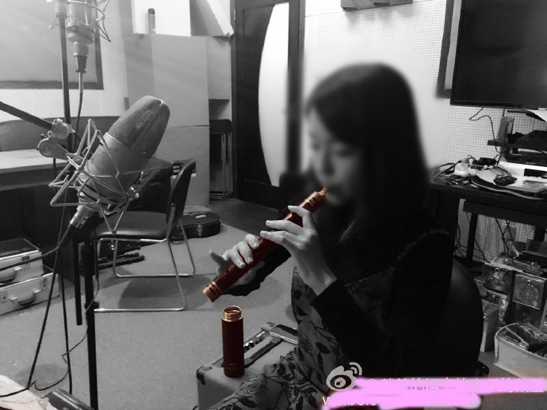

| 国内新闻 | National news |
|---|
来自腾讯网
来自凤凰网(若网页失效请点击此处！)
| 乐坛新闻 | Music news |
|---|
据《好莱坞报道》网站报道，美国前总统奥巴马凭借音乐剧《汉密尔顿》歌曲《最后一回(44 混音版)》, 首次登上了公告牌R&B热门歌曲榜单，该曲在1月5日的排行榜中位居第22名! Former US President Barack Obama appears on 'Hamilton's' "One Last Time" remix. He made his debut on the Billboard Hot R&B Songs chart this week, landing at No. 22 on the Jan. 5-dated rankings with "One Last Time (44 Remix)."
| 知识拓展 | Knownleadge |
|---|
背景音乐：雷蕾 叶凡 还在寻找你
 #（图片素材来自音乐人戴荃的微薄)